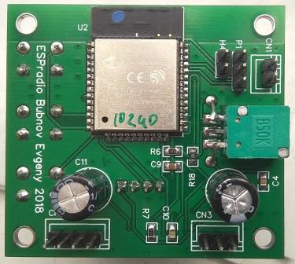

Интернет радиоприемник ESPradio

Основные характеристики:
|
• диапазон воспроизводимых частот |
20…17000 Гц |
|
• сопротивление нагрузки усилителя |
4 Ом |
|
• выходная мощность |
3 Вт |
|
• напряжение питания |
3.5…5 В |
|
• потребляемый ток |
270 мА |
|
• кол-во сохраняемых станций |
51 шт |
|
• размеры платы |
55х50 мм |
Изначально целью проекта являлось создание простого радиоприёмника, воспроизводящего потоковое аудио непосредственно из локальной сети или интернет-радиостанции без применения персонального компьютера. Приемник должен подключаться непосредственно к сети Wi-Fi и иметь возможность самостоятельного подключения к серверам в локальной сети или к интернет-серверам при наличии маршрутизатора. Конечно же, вполне возможно прослушивать интернет-радиостанции с помощью планшетов-смартфонов, однако сконструировать и собрать своими руками куда интереснее. И так поехали...
Конструкция
При анализе существующих и планируемых к прослушиванию радиостанций оказалось, что наиболее распространенными протоколами потокового вещания являются shoutcast и icecast.
После долгого штудирования интернета выбор был сделан в пользу ESP32 от Espressiff т.к. у него на борту есть все что понадобится для реализации интернет радиоприёмника, двухъядерный 32-битный микропроцессор Xtensa LX6 160-240МГц, RAM: 520Кб, FLASH 4-16Мб не говоря уже о различной периферии начиная от датчика Холла до ЦАПа. Потребление при полной нагрузке не превышает 200-230мА. Так что, то что нужно.
Для декодирования аудио потока решено было использовать LibMAD (MPEG audio decoder library) и встроенный ЦАП ESP32.
Неспешно изучалась документация вносились корректировки в схему в скоре развел плату которая получилась достаточно компактной.
В качестве интерфейса решил использовать "народный" графический OLED дисплей SSD1306 подключив его по I2C шине. Для простоты управления использовал три тактильные кнопки "воспроизведение-стоп" и выбор станций "следующая" и "предыдущая".
Моя версия приемника предназначалась для озвучания кухни в качестве заменителя компактного УКВ радиоприёмника. В погоне за размерами устройства, я решил использовать усилитель низкой частоты D класса PAM8403. Соответственно качество звучания в разумных пределах отошло на задний план.

Далее я составил свой список радиостанций от классических до танцевальных. Больше я не вспоминал о существовании местных УКВ радиостанций с их рекламой через каждые десять минут. Так же в приемнике реализовал отображение русских mp3 тэгов, что не в каждом "заводском" встретишь.
В текущей версии прошивки из сети интернет успешно воспроизводятся MP3 потоки до 320 кбит/с, приемник может хранить в себе 51 поток интернет радиостанций (в будущем планируется расширить до 250). Для добавления-редактирования списка станций, а так же для осуществления настроек используется веб интерфейс в который можно попасть набрав в адресной строке браузера IP адрес радиоприёмника который отображается на дисплее. Более подробно ознакомиться с интерфейсом радиоприемника вы можете на демо страничке.
В корпусе

Обзор и описание
Web интерфейс
Список станций
Список из 780 вещающих в mp3 формате радиостанций.
Прошивка и первое включение
Для того чтобы перевести модуль в режим загрузки прошивки необходимо:
1. Подключить USB-UART конвертер с логическими уровнями 3.3v к гнезду P1 Uart (см.схему)
2. Установить перемычку H4 Prog (см.схему)
3. Подать питание на приемник
Далее, потребуется утилита Flash download tools прошивка будет осуществляется при помощи ее. Важное замечание, Flash download tools необходимо разворачивать в корень диска и путь к файлам прошивки не должен содержать кириллических символов. Перед первой прошивкой необходимо воспользоваться опцией ERASE в настройках Flash download tools (см.картинку в архиве с прошивкой).
Конфигурацию SpiFlash модуля устанавливаем согласно картинки в архиве с прошивкой. CrystalFreq- 40M, Spi Speed- 80MHz, Spi Mode- DIO, Flash Size- 32Mbit (зависит от применяемого модуля). Указать адреса секций согласно файлам (см.картинку в архиве с прошивкой): 0x1000- загрузчик, 0x8000- разметка разделов, 0x10000- прошивка, 0x290000- разметка spiff, 0xe000- калибровочные данные. Выбрать COM порт uart конвертера, установить скорость Baud 921600 и нажать кнопку Start. Если все сделано верно то должен пойти процесс прошивки.
Прошивка
Первый макет
Активация
Без активации на дисплее всегда отображается надпись DEMO, а так же отключено управление радиоприемником через веб интерфейс в остальном функционал не ограничен. Ключ активации можно приобрести в магазине.
Наборы
Инструкция по сборке набора. Приобрести наборы для сборки Вы всегда можете в нашем интернет магазине.
Downloads:
iradio_sch.pdf Схема.
iradio_pcb_up.pdf печатная плата вверх.
iradio_pcb_down.pdf печатная плата низ.
ESPradio_387.zip прошивка версия 387.
espradiosample.mp3 образец звучания интернет радиоприемника.
Что нового в прошивке:
Версия 387
-устранены ошибки ntp клиента;
-устранены мелкие ошибки;
-новое ядро;
Версия 386
-устранены ошибки, повышена стабильность;
Версия 384
-добавлен сервис Captive portal. Теперь при подключении к приемнику в режиме AP страница конфигурации загружается автоматически;
-добавлена функция поиска WiFi сетей;
-добавлена функция принудительного выбора стандарта WiFi сети, 802.11B, 802.11BG и 802.11BGN;
Версия 383
-исправлены ошибки;
-добавлена возможность назначения размера буфера от 0.5 до 110 Кб;
Версия 382
-устранен баг в прошивке (пропадало соединение);
-добавлена функция отключения приема метаданных (были сбои в приеме метаданных на некоторых потоках);
-добавлен выбор схем подключения кнопок и выходов, старая-новая схема;
-косметические улучшения в web интерфейсе;
Версия 381
-полностью изменен web интерфейс приемника, демо здесь;
-добавлена функция мгновенного переключения между станциями;
-добавлена функция динамического отображения уровня wi-fi сигнала и напряжения питания в web интерфейсе;
Версия 380
-увеличен буфер воспроизведения с 32кБ до 100кБ;
-на дисплей добавлен индикатор заполнения буфера воспроизведения;
-отказался от использования libMAD тк с ней не удалось достичь стабильности;
-на дисплей добавлено отображение битрейта потока;
-на дисплей добавлено имя станции с сервера;
-добавлена возможность выбора NTP сервера;
-добавлена возможность сохранения и восстановления плей листа и конфигурации;
-переработан интерфейс Web страницы (раздел: Сейчас воспроизводится) добавлен: битрейт, заполнение буфера, имя станции. Теперь обновление о статусе воспроизводимой станции мгновенное;
-переработан интерфейс Web страницы (раздел: Обновление) добавлено отбновление web интерфейса;
-имя приемника в сети сейчас ESPradio;
Links: